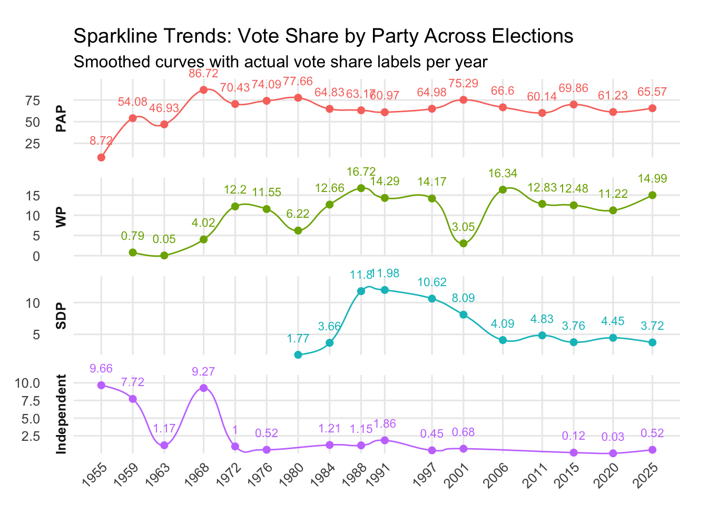

library(readr)
library(dplyr)
Attaching package: 'dplyr'The following objects are masked from 'package:stats':
filter, lagThe following objects are masked from 'package:base':
intersect, setdiff, setequal, unionlibrary(stringr)
library(janitor)
Attaching package: 'janitor'The following objects are masked from 'package:stats':
chisq.test, fisher.testlibrary(ggplot2)
library(ggalt)Registered S3 methods overwritten by 'ggalt':
method from
grid.draw.absoluteGrob ggplot2
grobHeight.absoluteGrob ggplot2
grobWidth.absoluteGrob ggplot2
grobX.absoluteGrob ggplot2
grobY.absoluteGrob ggplot2# Step 1: Read and clean the data
election_data <- read_csv("dataset/ParliamentaryGeneralElectionResultsbyCandidateUpdated_with_regions.csv") %>%
clean_names() %>%
mutate(
year = as.integer(year),
party = str_trim(party),
vote_count = as.integer(gsub(",", "", vote_count)),
party_clean = case_when(
str_detect(party, regex("PAP", ignore_case = TRUE)) ~ "PAP",
str_detect(party, regex("WP", ignore_case = TRUE)) ~ "WP",
str_detect(party, regex("SDP", ignore_case = TRUE)) ~ "SDP",
str_detect(tolower(party), "indp|independent") ~ "Independent",
TRUE ~ NA_character_
)
) %>%
filter(!is.na(vote_count), !is.na(year)) # Do not filter party_clean here, keep all parties for total votesRows: 1610 Columns: 8── Column specification ────────────────────────────────────────────────────────
Delimiter: ","
chr (7): constituency, constituency_type, candidates, party, vote_count, vot...
dbl (1): year
ℹ Use `spec()` to retrieve the full column specification for this data.
ℹ Specify the column types or set `show_col_types = FALSE` to quiet this message.Warning: There was 1 warning in `mutate()`.
ℹ In argument: `vote_count = as.integer(gsub(",", "", vote_count))`.
Caused by warning:
! NAs introduced by coercion# Step 2: Calculate total votes for each year across all parties
total_votes_year <- election_data %>%
group_by(year) %>%
summarise(total_votes_all = sum(vote_count, na.rm = TRUE), .groups = "drop")
# Step 3: Aggregate votes by party_clean per year (only valid party_clean)
party_votes_year <- election_data %>%
filter(!is.na(party_clean)) %>% # Filter only known parties here
group_by(year, party_clean) %>%
summarise(party_votes = sum(vote_count, na.rm = TRUE), .groups = "drop")
# Step 4: Join total votes per year with party votes and calculate vote share
party_trend <- party_votes_year %>%
left_join(total_votes_year, by = "year") %>%
mutate(
vote_share = (party_votes / total_votes_all) * 100,
party_clean = factor(party_clean, levels = c("PAP", "WP", "SDP", "Independent"))
) %>%
arrange(year, party_clean)
# View the result
print(party_trend, n = Inf)# A tibble: 58 × 5
year party_clean party_votes total_votes_all vote_share
<int> <fct> <int> <int> <dbl>
1 1955 PAP 13634 156324 8.72
2 1955 Independent 15098 156324 9.66
3 1959 PAP 281891 521271 54.1
4 1959 WP 4127 521271 0.792
5 1959 Independent 40252 521271 7.72
6 1963 PAP 272924 581555 46.9
7 1963 WP 286 581555 0.0492
8 1963 Independent 6788 581555 1.17
9 1968 PAP 65812 75894 86.7
10 1968 WP 3049 75894 4.02
11 1968 Independent 7033 75894 9.27
12 1972 PAP 524892 745239 70.4
13 1972 WP 90885 745239 12.2
14 1972 Independent 7462 745239 1.00
15 1976 PAP 590169 796572 74.1
16 1976 WP 91966 796572 11.5
17 1976 Independent 4173 796572 0.524
18 1980 PAP 494268 636452 77.7
19 1980 WP 39590 636452 6.22
20 1980 SDP 11292 636452 1.77
21 1984 PAP 568310 876596 64.8
22 1984 WP 110939 876596 12.7
23 1984 SDP 32102 876596 3.66
24 1984 Independent 10586 876596 1.21
25 1988 PAP 848029 1342435 63.2
26 1988 WP 224473 1342435 16.7
27 1988 SDP 158341 1342435 11.8
28 1988 Independent 15412 1342435 1.15
29 1991 PAP 477760 783612 61.0
30 1991 WP 112010 783612 14.3
31 1991 SDP 93856 783612 12.0
32 1991 Independent 14596 783612 1.86
33 1997 PAP 465751 716745 65.0
34 1997 WP 101544 716745 14.2
35 1997 SDP 76129 716745 10.6
36 1997 Independent 3210 716745 0.448
37 2001 PAP 470765 625267 75.3
38 2001 WP 19060 625267 3.05
39 2001 SDP 50607 625267 8.09
40 2001 Independent 4253 625267 0.680
41 2006 PAP 748130 1123273 66.6
42 2006 WP 183578 1123273 16.3
43 2006 SDP 45937 1123273 4.09
44 2011 PAP 1212154 2015636 60.1
45 2011 WP 258510 2015636 12.8
46 2011 SDP 97369 2015636 4.83
47 2015 PAP 1579183 2260379 69.9
48 2015 WP 282143 2260379 12.5
49 2015 SDP 84931 2260379 3.76
50 2015 Independent 2780 2260379 0.123
51 2020 PAP 1527491 2494537 61.2
52 2020 WP 279922 2494537 11.2
53 2020 SDP 111054 2494537 4.45
54 2020 Independent 655 2494537 0.0263
55 2025 PAP 1570803 2395660 65.6
56 2025 WP 359161 2395660 15.0
57 2025 SDP 89048 2395660 3.72
58 2025 Independent 12537 2395660 0.523 # region
# Aggregate votes by region, year, and party_clean
region_party_votes <- election_data %>%
filter(!is.na(party_clean), !is.na(region)) %>%
group_by(region, year, party_clean) %>%
summarise(region_party_votes = sum(vote_count, na.rm = TRUE), .groups = "drop")
# Calculate total votes per region and year (all parties)
total_votes_region_year <- election_data %>%
filter(!is.na(region)) %>%
group_by(region, year) %>%
summarise(total_votes_region = sum(vote_count, na.rm = TRUE), .groups = "drop")
# Join and compute vote share by party in each region for each year
region_party_performance <- region_party_votes %>%
left_join(total_votes_region_year, by = c("region", "year")) %>%
mutate(vote_share_region = (region_party_votes / total_votes_region) * 100) %>%
arrange(region, party_clean, year)
region_party_trends <- region_party_performance %>%
group_by(region, party_clean) %>%
summarise(
first_year = min(year),
last_year = max(year),
first_vote_share = vote_share_region[year == first_year][1],
last_vote_share = vote_share_region[year == last_year][1],
.groups = "drop"
) %>%
mutate(
vote_share_diff = last_vote_share - first_vote_share,
performance_trend = case_when(
is.na(first_vote_share) | is.na(last_vote_share) ~ NA_character_,
vote_share_diff > 0 ~ "↑",
vote_share_diff < 0 ~ "↓",
TRUE ~ "→" # no change
),
first_vote_share = round(first_vote_share, 2),
last_vote_share = round(last_vote_share, 2),
vote_share_diff = round(vote_share_diff, 2)
)
print(region_party_trends, n = Inf)# A tibble: 20 × 8
region party_clean first_year last_year first_vote_share last_vote_share
<chr> <chr> <int> <int> <dbl> <dbl>
1 Central Independent 1955 2025 6.51 2.36
2 Central PAP 1955 2025 12.4 76.5
3 Central SDP 1980 2020 4.48 6.73
4 Central WP 1959 2015 1.5 7.64
5 East Independent 1955 2001 4.31 7.52
6 East PAP 1959 2025 43.6 53.0
7 East SDP 1980 1997 1.76 26.6
8 East WP 1972 2025 19.1 39.4
9 North Independent 1955 1988 62.3 1.65
10 North PAP 1959 2025 60.4 72.7
11 North SDP 1984 2025 7.82 13.7
12 North WP 1968 2015 8.65 7.72
13 North-East Independent 1959 1988 9.74 2.28
14 North-East PAP 1955 2025 14.2 52.2
15 North-East SDP 1988 1991 13.6 6.88
16 North-East WP 1968 2025 17.7 46.5
17 West Independent 1959 2020 8.24 0.13
18 West PAP 1959 2025 58.4 67.6
19 West SDP 1984 2025 5.37 2.56
20 West WP 1972 1997 12.5 7.51
# ℹ 2 more variables: vote_share_diff <dbl>, performance_trend <chr># Sparkline-style plot with year ticks and percentage labels
ggplot(party_trend, aes(x = year, y = vote_share, group = party_clean, color = party_clean)) +
geom_xspline(size = 1, spline_shape = -0.6) + # smooth curved lines
geom_point(size = 2) +
geom_text(aes(label = round(vote_share, 2)), vjust = -1.5, size = 3, show.legend = FALSE) +
facet_wrap(~ party_clean, scales = "free_y", ncol = 1, strip.position = "left") +
scale_x_continuous(
breaks = unique(party_trend$year),
guide = guide_axis(check.overlap = TRUE)
) +
scale_y_continuous(expand = expansion(mult = c(0, 0.15))) +
coord_cartesian(clip = "off") +
theme_minimal(base_size = 12) +
theme(
strip.text = element_text(face = "bold"),
axis.title = element_blank(),
legend.position = "none",
panel.grid.minor = element_blank(),
panel.spacing = unit(1, "lines"),
plot.margin = margin(t = 20, r = 20, b = 10, l = 10),
axis.text.x = element_text(angle = 45, hjust = 1)
) +
labs(
title = "Sparkline Trends: Vote Share by Party Across Elections",
subtitle = "Smoothed curves with actual vote share labels per year"
)Warning: Using the `size` aesthetic in this geom was deprecated in ggplot2 3.4.0.
ℹ Please use `linewidth` in the `default_aes` field and elsewhere instead.